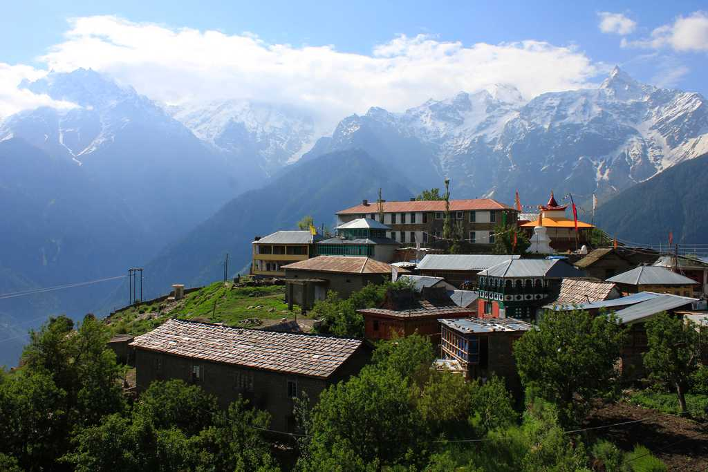
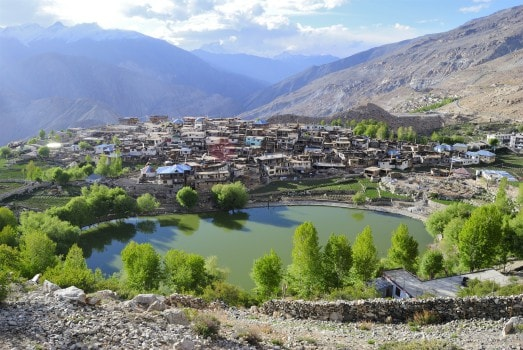
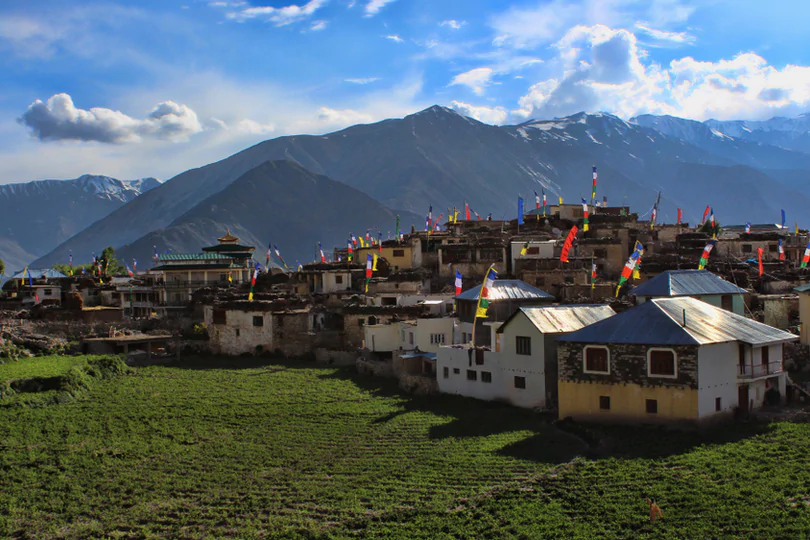
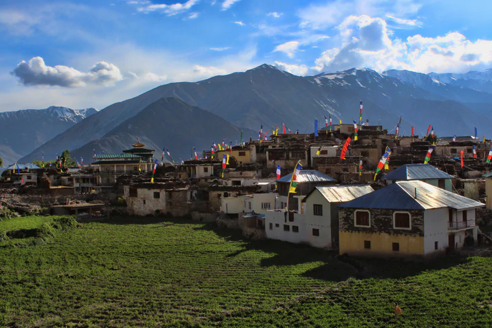
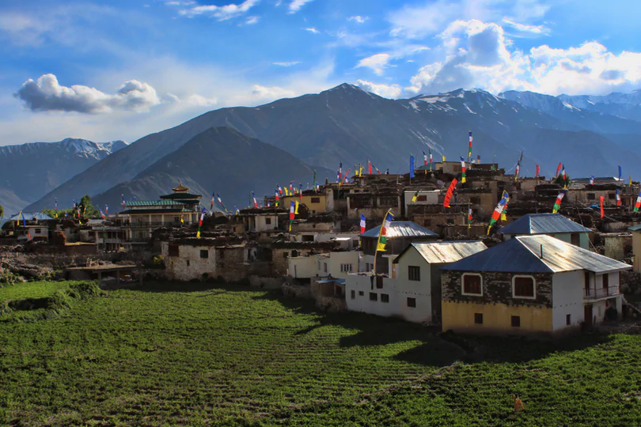

HIMACHAL PRADESH
OTHER DISTRICTS
KINNAUR
Kinnaur is one of the twelve districts of the state Himachal Pradesh in Northan India. The disrtict is divided into three areas(Kalpa,Nichar and Pooh) and six thesils. The administrative headquarters of the district is at Reckong Peo . The mountain peak of Kinnaur Kailash is founf in this district. As of 2011,it is the second least populous district of Himachal Pradesh.
| Country | INDIA |
|---|---|
| state | Himachal Pradesh |
| Established | 1972 |
| Headquarters | Reckong Peo |
| Tehsils | 6 |
| AREA | 6,401km²(2,471sq mi) |
| Population(2011)
|
|
| Demographics
|


 

